Plots.jl
FlexiChains defines a collection of plot recipes which allows you to use the Plots.jl ecosystem to visualise chains. In particular, to access these you will want to load StatsPlots.jl:
using StatsPlotsPlot types
What kind of plot you get in when using Plots.jl is controlled mainly by the seriestype keyword argument. For example, plot(..., seriestype=:histogram) will produce a histogram. In fact, calling histogram(...) simply redirects to plot(..., seriestype=:histogram).
The following series types are supported for FlexiChain objects.
seriestype= | Equivalent function | Description |
|---|---|---|
:traceplot | FlexiChains.Plots.traceplot | Trace plot of samples |
:histogram | Plots.histogram | Histogram of samples |
:density | Plots.density | Kernel density estimate of samples |
:mixeddensity | FlexiChains.Plots.mixeddensity | Density plot or histogram, depending on whether the parameter is continuous or discrete |
:meanplot | FlexiChains.Plots.meanplot | Running mean of samples |
:autocorplot | FlexiChains.Plots.autocorplot | Autocorrelation of samples |
:traceplot_and_density | Plots.plot (with no seriestype argument) | Trace plot and mixed density side-by-side |
:rankplot | FlexiChains.Plots.rankplot with overlay=false | Rank plot with separate histograms per chain |
:rankplot_overlay | FlexiChains.Plots.rankplot with overlay=true | Rank plot with all chains' data overlaid |
There is currently one exception to this: StatsPlots.cornerplot is manually overloaded because it does not use the usual seriestype mechanism.
Please note that the identifiers traceplot, meanplot, mixeddensity, and autocorplot are also exported by MCMCChains.jl (which uses Plots.jl as its backend), as well as the FlexiChains.Makie submodule. If you have imported more than one of these modules, you will need to disambiguate which function you want to use by prefixing it with the module name, e.g. FlexiChains.Plots.traceplot.
General interface
The above plotting functions should be called with the following signature:
plotfunc(chn, param_or_params; pool_chains::Bool=false, kwargs...)Positional arguments
chnis aFlexiChainobject.param_or_paramsis optional, and can be anything that is used to index into a chain. If not provided, all parameters in the chain will be plotted.
Keyword arguments
If
pool_chains=true, then samples from all chains are concatenated before plotting densities or histograms. Otherwise, each chain is plotted separately.Some plotting functions like
autocorplotandrankplothave additional keyword arguments which control the details of the plot; please see the docstrings for those functions for more details.Other keyword arguments are passed through to the underlying Plots.jl functions which allow you to, for example, control the appearance of the plot.
Setup
We'll begin by making a model with different types of parameters (continuous, discrete, and vector-valued) to demonstrate the plotting functions. We could use the familiar example chain from the other docs pages, but that one is too small to demonstrate some of these plots well.
using FlexiChains, StatsPlotsimport FlexiChains.Plots as FP # For the plotting functions.using FlexiChains: FlexiChain, Parameter, Extra, OrderedDictchn = FlexiChain{VarName}( 500, 2, OrderedDict( Parameter(@vn(float)) => randn(500, 2), Parameter(@vn(int)) => rand(1:5, 500, 2) .* 3 .+ 2, Parameter(@vn(vect)) => [[randn(), randn() - 1.0] for _ in 1:500, _ in 1:2], Extra(:an_extra) => randn(500, 2), ),)╭─FlexiChain (500 iterations, 2 chains) ───────────────────────────────────────╮
│ ↓ iter = 1:500 │
│ → chain = 1:2 │
│ │
│ Parameters (3) ── VarName │
│ Float64 float │
│ Int64 int │
│ Vector{Float64} vect (2,) │
│ │
│ Extras (1) │
│ Float64 an_extra │
╰──────────────────────────────────────────────────────────────────────────────╯Default plot
Calling plot(chn) produces a trace plot and mixed density side-by-side for each parameter.
Notice that the chain has not split z up into z[1] and z[2]. However, when plotting, it will be automatically split up for you. Also notice that Extra keys, like the log probabilities, are not plotted by default.
RecipesBase.plot — Function
Plots.plot(
chn::FlexiChain[, param_or_params];
pool_chains=false,
kwargs...
)Plot a FlexiChain using Plots.jl. By default, this produces a trace plot and mixed density side-by-side for each parameter.
If no parameters are specified, this will plot all parameters in the chain. Note that non-parameter, i.e. Extra, keys are excluded by default. If you want to plot all keys, you can explicitly pass all keys with plot(chn, :).
Other keyword arguments are forwarded to the underlying Plots.jl functions.
plot(chn)savefig("plot1.svg");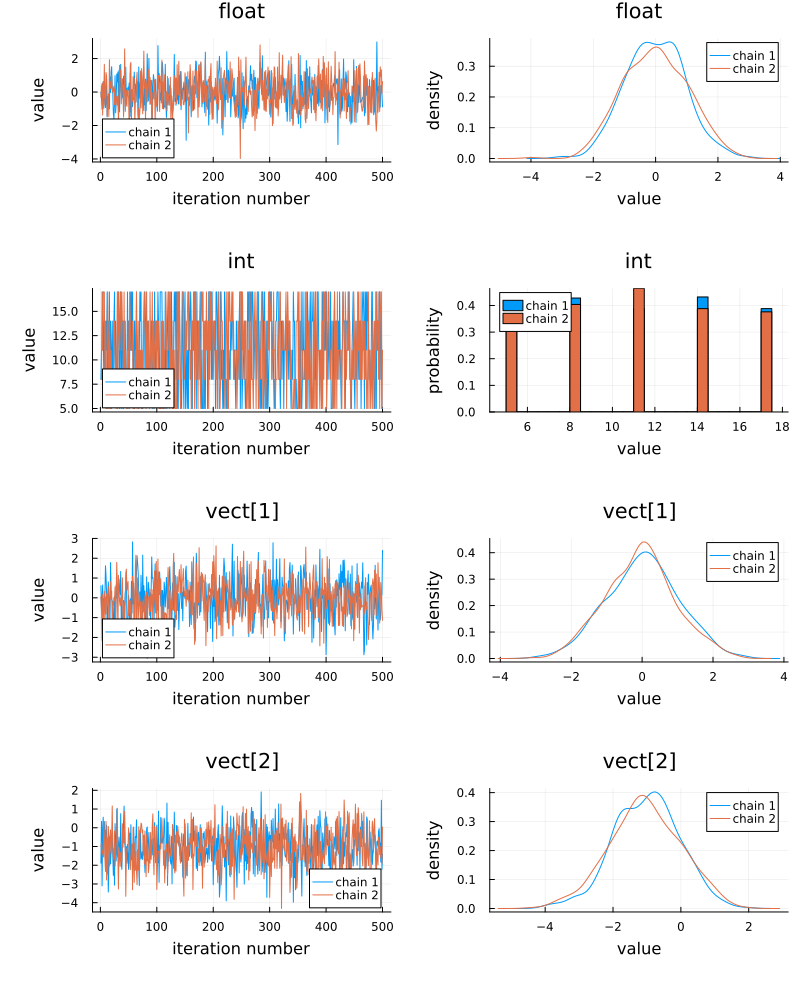
If you want to plot specific parameter(s), you can specify them as the second positional argument. In general, the second argument can be anything that you can index into a chain with. This means a symbol, a parameter, a FlexiChains.Extra, a sub-VarName, or a vector thereof:
plot(chn, [@vn(float), :an_extra])savefig("plot2.svg");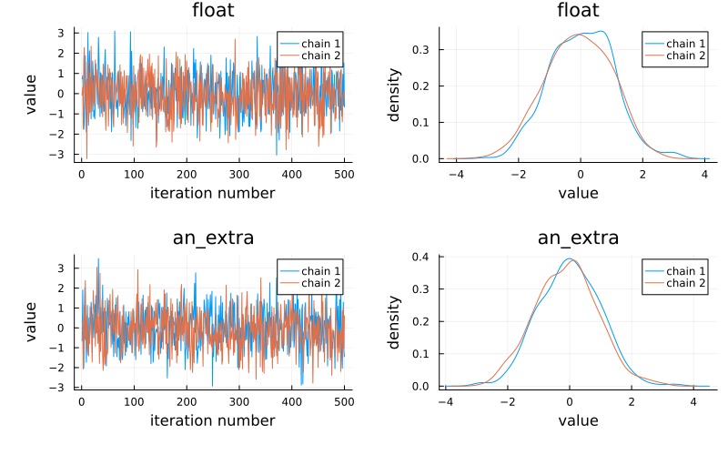
Trace plots
FlexiChains.Plots.traceplot — Function
FlexiChains.Plots.traceplot(
chn::FlexiChain{TKey}[, param_or_params];
kwargs...
)Plot the sample values against iteration number for the specified parameter(s) in the given FlexiChain using Plots.jl.
If no parameters are specified, this will plot all parameters in the chain. Note that non-parameter, i.e. Extra, keys are excluded by default. If you want to plot all keys, you can explicitly pass all keys with traceplot(chn, :).
Other keyword arguments are forwarded to the underlying Plots.jl functions.
FlexiChains.Plots.traceplot! — Function
FlexiChains.Plots.traceplot!(
chn::FlexiChain{TKey}[, param_or_params];
kwargs...
)Same as FlexiChains.Plots.traceplot, but uses plot! instead of plot.
FP.traceplot(chn)savefig("traceplot.svg");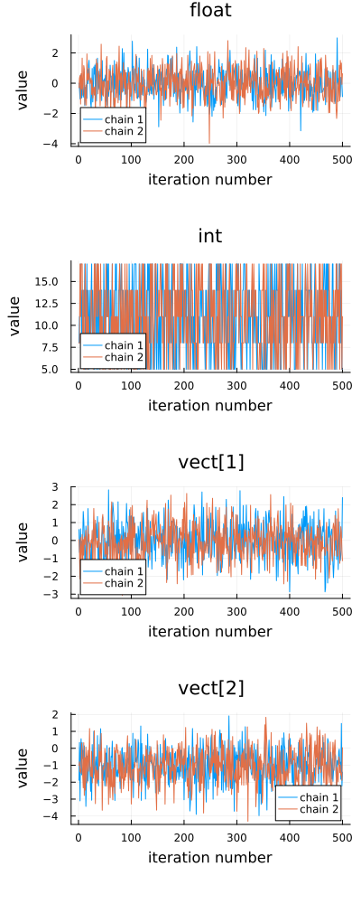
Density plots
Density plots are produced using the standard Plots.density function, which works with FlexiChain objects.
Plots.density — Function
Plots.density(
chn::FlexiChain[, param_or_params];
pool_chains::Bool=false,
kwargs...
)Make a density plot of the parameter values in chn using Plots.jl.
If no parameters are specified, this will plot all parameters in the chain. Note that non-parameter, i.e. Extra, keys are excluded by default. If you want to plot all keys, you can explicitly pass all keys with density(chn, :).
The pool_chains keyword argument specifies whether to pool samples across multiple chains when plotting. If true (the default), samples from all chains are pooled together; if false, samples from each chain are plotted separately.
Other keyword arguments are forwarded to the underlying Plots.jl functions.
density(chn)savefig("density.svg");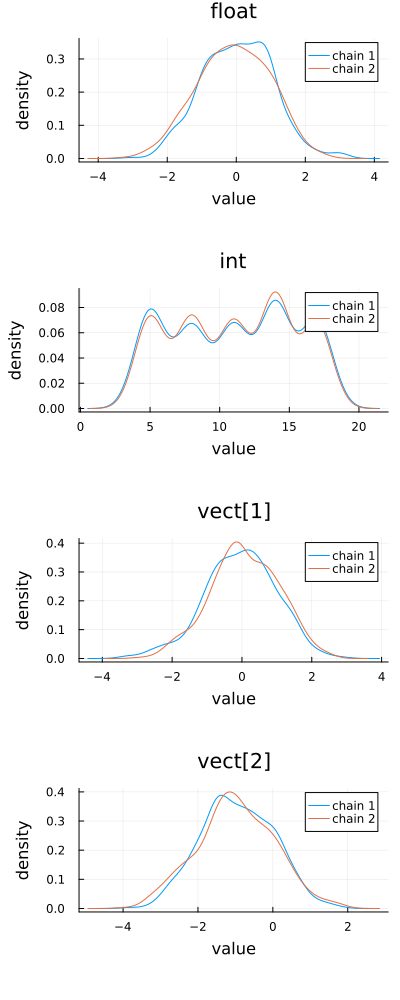
Histograms
Similarly, Plots.histogram works with FlexiChain objects:
Plots.histogram — Function
Plots.histogram(
chn::FlexiChain[, param_or_params];
pool_chains::Bool=false,
kwargs...
)Make a histogram of the parameter values in chn using Plots.jl.
If no parameters are specified, this will plot all parameters in the chain. Note that non-parameter, i.e. Extra, keys are excluded by default. If you want to plot all keys, you can explicitly pass all keys with histogram(chn, :).
The pool_chains keyword argument specifies whether to pool samples across multiple chains when plotting. If true (the default), samples from all chains are pooled together; if false, samples from each chain are plotted separately.
Other keyword arguments are forwarded to the underlying Plots.jl functions.
histogram(chn)savefig("histogram.svg");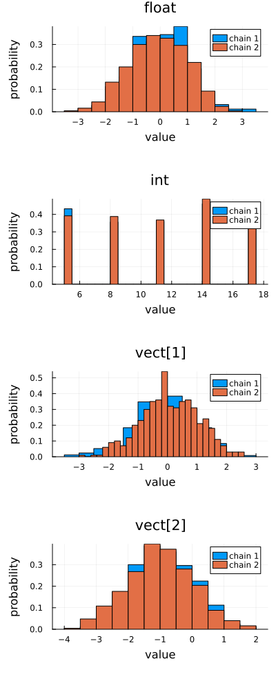
Running mean plots
FlexiChains.Plots.meanplot — Function
FlexiChains.Plots.meanplot(
chn::FlexiChain{TKey}[, param_or_params];
kwargs...
)Plot the running mean of the specified parameter(s) in the given FlexiChain using Plots.jl.
If no parameters are specified, this will plot all parameters in the chain. Note that non-parameter, i.e. Extra, keys are excluded by default. If you want to plot all keys, you can explicitly pass all keys with meanplot(chn, :).
Other keyword arguments are forwarded to the underlying Plots.jl functions.
FlexiChains.Plots.meanplot! — Function
FlexiChains.Plots.meanplot!(
chn::FlexiChain{TKey}[, param_or_params];
kwargs...
)Same as FlexiChains.Plots.meanplot, but uses plot! instead of plot.
FP.meanplot(chn)savefig("meanplot.svg");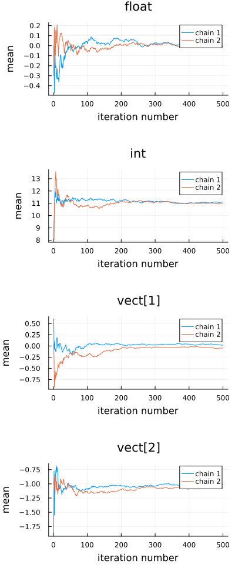
Rank plots
FlexiChains.Plots.rankplot — Function
FlexiChains.Plots.rankplot(
chn::FlexiChain{TKey}[, param_or_params];
overlay::Bool=false,
kwargs...
)Plot a histogram of ranks for the specified parameter(s) in the given FlexiChain using Plots.jl.
If no parameters are specified, this will plot all parameters in the chain. Note that non-parameter, i.e. Extra, keys are excluded by default. If you want to plot all keys, you can explicitly pass all keys with rankplot(chn, :).
If overlay is false (the default), a separate histogram is plotted for each chain. If true, the histograms for all chains are overlaid on a single plot with different colours.
Other keyword arguments are forwarded to the underlying Plots.jl functions.
FlexiChains.Plots.rankplot! — Function
FlexiChains.Plots.rankplot!(
chn::FlexiChain{TKey}[, param_or_params];
overlay::Bool=false,
kwargs...
)Same as FlexiChains.Plots.rankplot, but uses plot! instead of plot.
FP.rankplot(chn)savefig("rankplot.svg");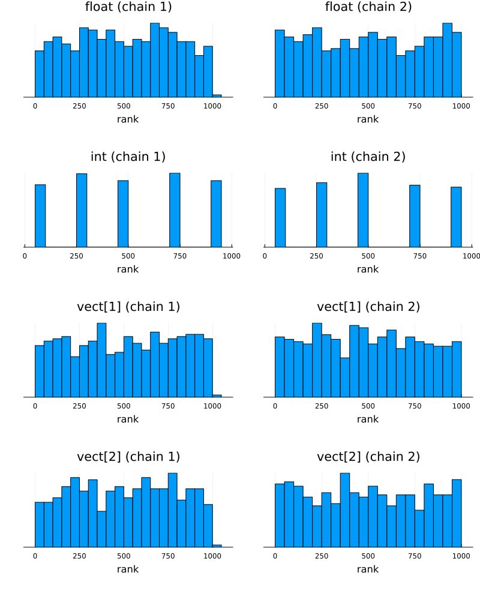
Autocorrelation plots
FlexiChains.Plots.autocorplot — Function
FlexiChains.Plots.autocorplot(
chn::FlexiChain{TKey}[, param_or_params];
lags=1:min(niters(chn)-1, round(Int,10*log10(niters(chn)))),
demean=true,
kwargs...
)Plot the autocorrelation of the specified parameter(s) in the given FlexiChain using Plots.jl.
If no parameters are specified, this will plot all parameters in the chain. Note that non-parameter, i.e. Extra, keys are excluded by default. If you want to plot all keys, you can explicitly pass all keys with autocorplot(chn, :).
The lags keyword argument specifies which lags to plot. By default, this is set to the integers from 1 to min(niters-1, round(Int,10*log10(niters))), mimicking the default behaviour of StatsBase.autocor.
The demean keyword argument specifies whether to subtract the mean before computing the autocorrelation (default true), and is passed to StatsBase.autocor.
Other keyword arguments are forwarded to the underlying Plots.jl functions.
FlexiChains.Plots.autocorplot! — Function
FlexiChains.Plots.autocorplot!(
chn::FlexiChain{TKey}[, param_or_params];
kwargs...
)Same as FlexiChains.Plots.autocorplot, but uses plot! instead of plot.
FP.autocorplot(chn)savefig("autocorplot.svg");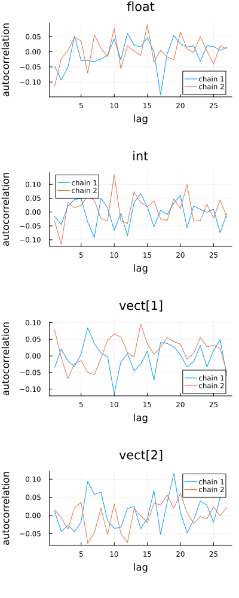
Mixed density plots
FlexiChains.Plots.mixeddensity — Function
FlexiChains.Plots.mixeddensity(
chn::FlexiChain{TKey}[, param_or_params];
pool_chains::Bool=false,
kwargs...
)Plot a density estimate or histogram for the specified parameter(s) in the given FlexiChain using Plots.jl. Continuous-valued parameters are plotted as density estimates, discrete-valued parameters as histograms.
If no parameters are specified, this will plot all parameters in the chain. Note that non-parameter, i.e. Extra, keys are excluded by default. If you want to plot all keys, you can explicitly pass all keys with mixeddensity(chn, :).
The pool_chains keyword argument specifies whether to pool samples across multiple chains when plotting. If true (the default), samples from all chains are pooled together; if false, samples from each chain are plotted separately.
Other keyword arguments are forwarded to the underlying Plots.jl functions.
FlexiChains.Plots.mixeddensity! — Function
FlexiChains.Plots.mixeddensity!(
chn::FlexiChain{TKey}[, param_or_params];
kwargs...
)Same as FlexiChains.Plots.mixeddensity, but uses plot! instead of plot.
FP.mixeddensity(chn)savefig("mixeddensity.svg");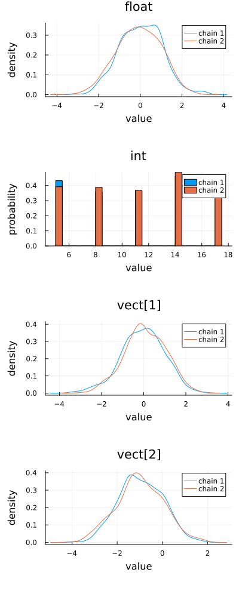
Corner plots
StatsPlots.cornerplot — Function
StatsPlots.cornerplot(
chn::FlexiChain[, param_or_params];
kwargs...
)Make a corner plot of chn using Plots.jl.
If no parameters are specified, this will plot all parameters in the chain. Note that non-parameter, i.e. Extra, keys are excluded by default. If you want to plot all keys, you can explicitly pass all keys with cornerplot(chn, :).
Other keyword arguments are forwarded to the underlying Plots.jl functions.
StatsPlots.cornerplot(chn)savefig("cornerplot.svg");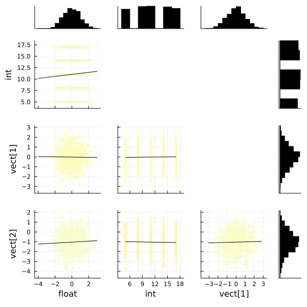
Violin plots
Plots.violin — Function
Plots.violin(
chn::FlexiChain[, param_or_params];
pool_chains::Bool=false,
with_box::Bool=false,
kwargs...
)Make a violin plot of chn using Plots.jl.
If no parameters are specified, this will plot all parameters in the chain. Note that non-parameter, i.e. Extra, keys are excluded by default. If you want to plot all keys, you can explicitly pass all keys with violin(chn, :).
The pool_chains keyword argument specifies whether to pool samples across multiple chains when plotting. If true (the default), samples from all chains are pooled together; if false, samples from each chain are plotted separately.
If with_box=true, a box plot will additionally be overlaid on the violin plot.
Other keyword arguments are forwarded to the underlying Plots.jl functions. (For with_box=true, keyword arguments are passed to both the violin and box plot components.)
Plots.violin(chn)savefig("violin.svg");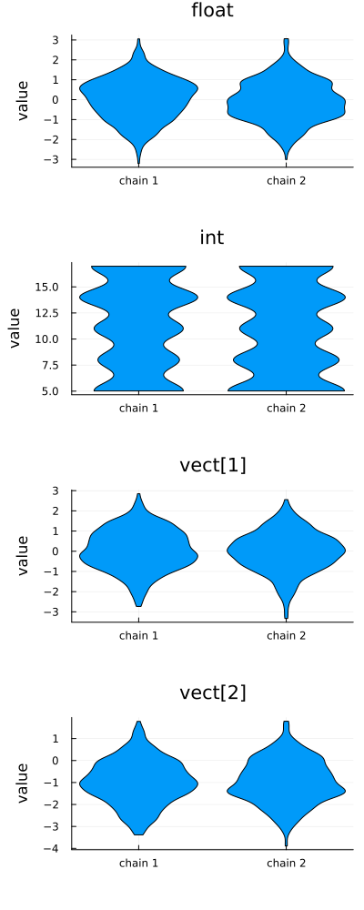